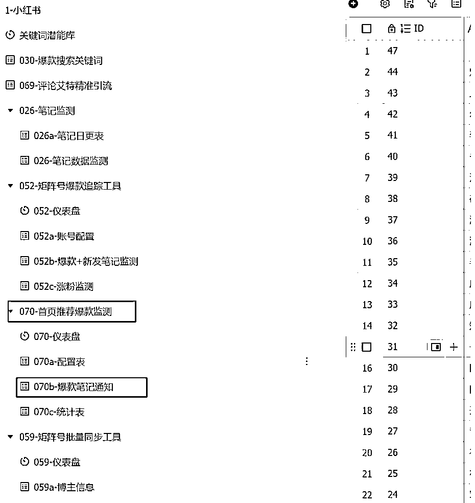
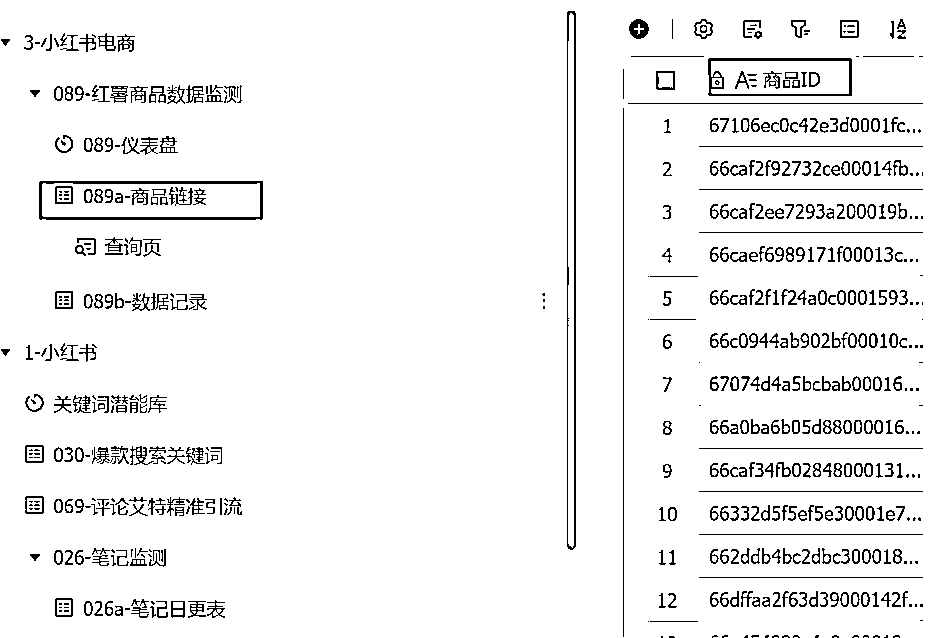
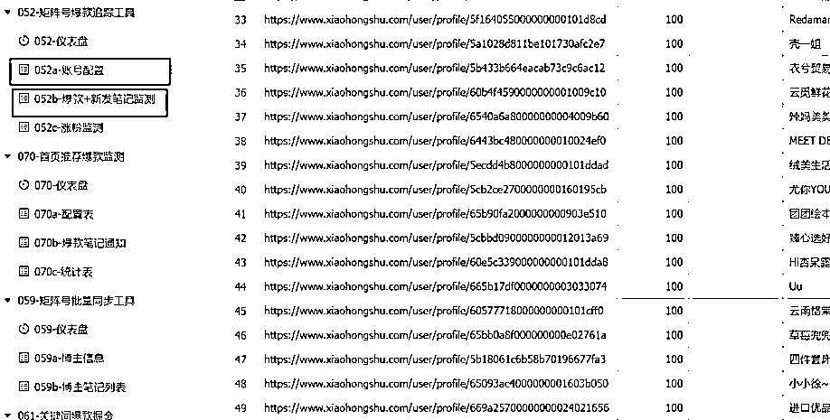
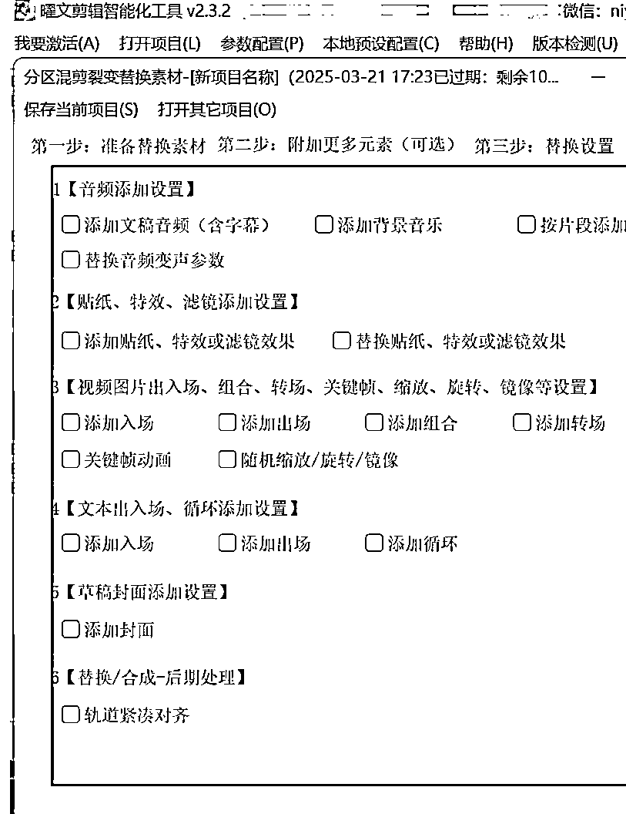
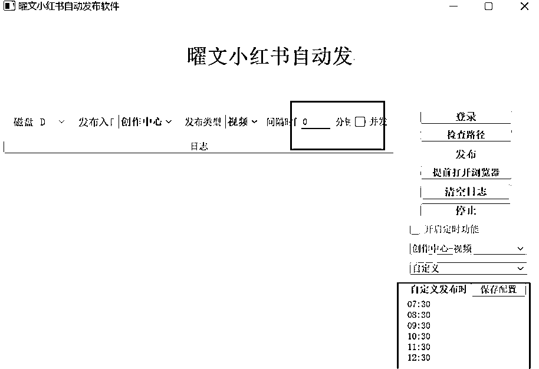

来源：https://go6xq64elg.feishu.cn/docx/KYnFdbmjToX3ImxlRTSciOVBnJh
Hi~ 我是曜文
今天和大家分享我们目前小红书运营在使用的自动化自动化工具在小红书提效20倍！
如果你有这种感觉：每天早上醒来第一件事就是查看数据然后开始一天的"搬砖"工作——研究爆款、策划内容、剪辑视频、编辑文案、安排发布、回复评论...忙得连喝水的时间都没有
别担心！今天我就来把我们运营过程，如何利用自动化工具（内容后附工作流搭建教程点击链接）
让一个人轻松管理20个小红书账号，将效率提升至少20倍！
做正确的事，才能快速看到效果！
小红书成功的第一步是什么？
对标数据！但手动收集太耗时了，我们目前建立自动化数据采集体系：



我们运营之前每天花3小时手动收集数据，现在用了自动化后，只需10分钟审核数据报告！解放出来的时间都用来做内容策划了，效率翻倍清晰可见。
光有数据还不够，还需要分析和优化：
数据分析不是目的，而是为了指导下一步内容创作 通过自动化工具，你可以在喝咖啡的时间里完成一整天的数据分析工作！
视频是小红书最受欢迎的内容形式，但制作太耗时？试试这些：

举个例子，我们运营之前做的美妆号，每天要剪10个视频，光剪辑就要4小时。用了自动化工具后，输入文案，选择模板，10分钟15个视频就出来了！
"工欲善其事，必先利其器" 花一周时间建立好你的模板库，后面每天只需要投喂新素材，就能批量生产高质量内容了！
图文笔记虽然看起来简单，但要做好同样不容易
下面是自动化的秘诀：
使用可画设计模版批量套图https://www.canva.cn/
种草号，每天要P10张图，编辑5篇文案，忙得焦头烂额 用了自动化工具后，选好产品图，AI自动帮我换背景、生成文案、套用模板，效率提升了10倍！
准备10套不同风格的模板，接下来一个月就能轻松用这些模板快速生产内容了！

"不要重复发明轮子"，研究爆款是最快的学习方式。
通过自动化工具，你可以持续追踪同行的爆款，提取其中的成功要素，应用到自己的内容中。
自动化不是一劳永逸，而是需要持续优化的过程：
复盘不是为了数据而数据，而是为了发现问题，指导下一步行动！
每周五固定做复盘，把一周的数据分析透彻，然后调整下周计划 三个月下来，他的账号从0变现了5W＋，关键全程自动化只需要优化内容！
通过自动化工具，一个人真的能管理20个小红书账号吗？答案是肯定的！
我们有的运营一个人管理20个美妆号，每个号都有不同定位：学生党、宝妈、上班族、美妆工具、平价种草等。 通过自动化系统，她每天只需工作4小时，却能维持所有账号的日更！
在小红书这个竞争激烈的平台上，自动化工具就像是你的秘密武器，能让你以一敌十，甚至以一敌百！
不盲从热门，结合自己的专业和兴趣，找到独特价值点。用自动化工具帮你快速测试不同方向的效果。
先建立基础的自动化流程，再逐步完善。第一个月的目标是跑通从0到1的全流程，建立创作习惯。
定期分析数据，收集用户反馈，有针对性地优化内容。让系统越来越智能，越来越符合你的需求。
自动化工具只是工具，核心还是你的内容价值和创意
把重复性工作交给AI，把创意和策略留给自己，这才是真正的效率提升！
希望这篇文章对你有所帮助！
如果你正在小红书创作的道路上奋斗，不妨试试这些自动化工具，让你的创作之路事半功倍！